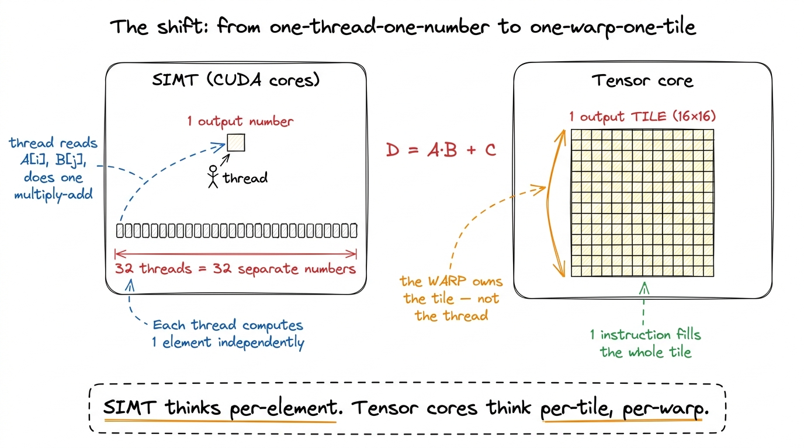
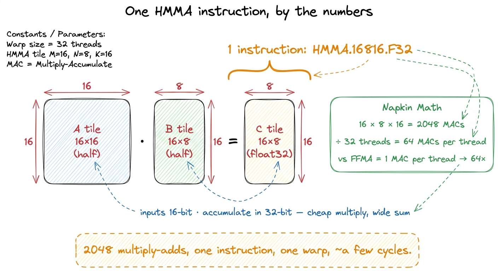
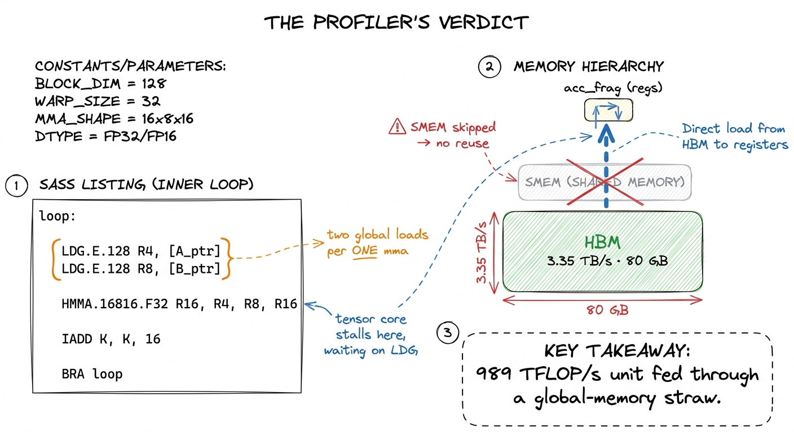
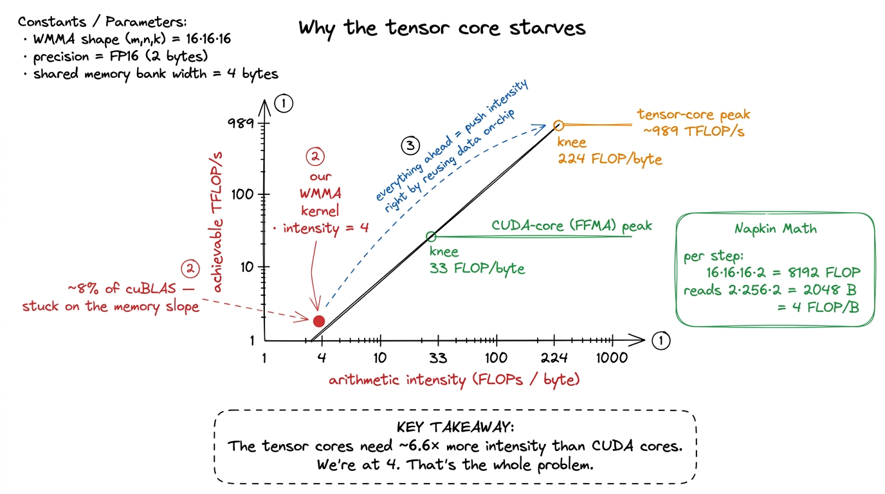
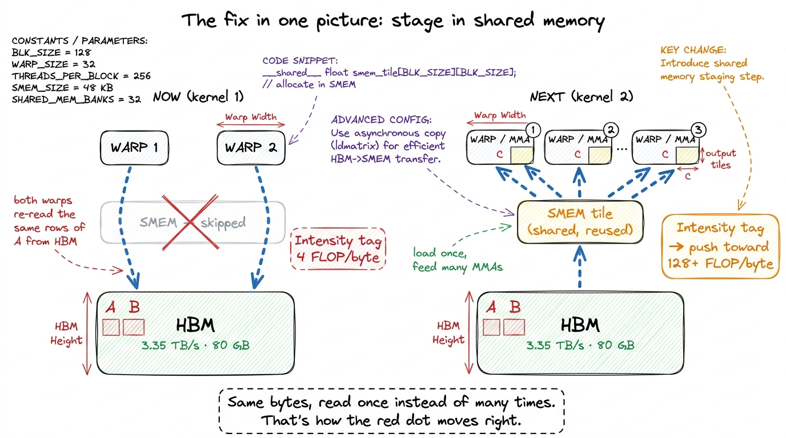
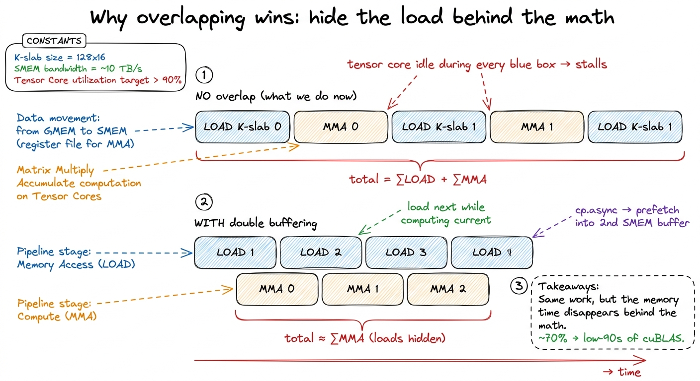

Tensor cores I: the WMMA GEMM TC
Everything we have built so far multiplied matrices the honest, human way. A thread picks up two numbers, multiplies them, adds the product into a running total, and does it again. Do that across enough threads and you get a matrix multiply. That style has a name — SIMT, for Single Instruction, Multiple Threads — and over the SIMT GEMM ladder we tuned it until the last kernel, warptiling, reached 93.7% of cuBLAS.
That number was a small lie, and this article is about the lie.
It was 93.7% of cuBLAS running on the CUDA cores — the ordinary scalar arithmetic units. But cuBLAS has not seriously used the CUDA cores for a big matrix multiply since around 2017. The real library dispatches to a different piece of silicon, the tensor core, a unit that multiplies a whole small matrix per instruction and delivers roughly an order of magnitude more throughput than the scalar pipe. So beating 93.7% of the CUDA-core baseline is a bit like winning a bicycle race next to a highway. We were fast for a bicycle. The traffic was doing something else entirely.
This article answers one question: how do we start using that other silicon, from the very first line of code? We will build the gentlest possible tensor-core matrix multiply, measure it, watch it fall on its face for an interesting reason, and use that failure to lay out the whole ladder ahead. If you have never touched a tensor core, this is the place to begin — we will assume nothing beyond "a matrix multiply is a lot of multiply-adds," which the SIMT ladder already taught us.
The one picture to hold in your head
Before any code, let me hand you the mental model we will reuse for the rest of the article. It is a single shift in who does the work.
In SIMT, the unit of work is a thread, and a thread owns one output number. Thirty-two threads run in lockstep as a warp, but each still thinks about its own scalar. One thread, one element.
A tensor core breaks that. The unit of work is now the warp, and a warp owns one output tile — a little square block of the answer. No single thread holds a full row or column. The 32 threads pool their registers, hand the tile to the tensor core together, and the tensor core multiplies two small matrices in a few clock cycles and hands the block back.

figure rendering · The single mental shift behind tensor cores. The owner of work moves uKeep that right-hand picture in mind. Everything below is a consequence of it.
What a tensor core actually is
A tensor core is a hardware unit that lives inside each Streaming Multiprocessor (SM). It computes a fused matrix multiply-accumulate — D = A·B + C — on small fixed-size tiles, in a handful of clock cycles, from a single instruction. The H100 has four tensor cores per SM, one per warp scheduler, across its roughly 132 SMs.1 Four per SM is not a coincidence — an SM has four warp schedulers, and each scheduler drives one tensor core. So at most four warps per SM can be doing tensor-core math in the same cycle. That is a real constraint later when we size how many warps a block should have. Together they are why the chip is rated at about 989 TFLOP/s of BF16 — against a CUDA-core FP32 peak of roughly a tenth of that.2 989 TFLOP/s is the realistic, sparsity-free figure. NVIDIA's headline slides often quote ~1979 TFLOP/s, which assumes 2:4 structured sparsity you almost never have in a dense GEMM. We always benchmark against the honest number.
Let me make "does a whole small matrix per instruction" concrete, because it is easy to nod past. Inspect the SASS of a real tensor-core kernel and you find an instruction like HMMA.16816.F32. Read the digits: 16, 8, 16 are the shape — a 16×16 block of A times a 16×8 block of B. That is 16 × 8 × 16 = 2048 multiply-accumulate operations. In one instruction. Split across the 32 threads of the warp, that is 2048 / 32 = 64 multiply-adds contributed by each thread per instruction.3 "HMMA" = Half-precision Matrix Multiply-Accumulate. There is a whole family — HMMA for FP16/BF16, IMMA for int8, and on Hopper the giant WGMMA warpgroup variant we meet much later. They are all the same idea at different sizes and precisions.
Compare that to a CUDA core. An FFMA — the scalar fused multiply-add — does exactly 1 multiply-add per thread per instruction. So per instruction issued, the tensor core is doing 64× the arithmetic of the scalar pipe. That factor, not any clock-speed magic, is where the order-of-magnitude throughput comes from.
We are switching precision, on purpose
The tensor core does not eat FP32 the way a CUDA core does. Its native diet is 16-bit inputs — half (FP16) or bfloat16 — multiplied together, with the running sum kept in FP32. So from here on A and B are half, C is float, and we compute C = A · B with the multiply happening in FP16 and the accumulator in FP32.
This is not a compromise we are grudgingly accepting. It is the exact shape the silicon was built for, and it is the exact shape modern inference actually runs. When vLLM serves a Llama model in FP16, or DeepSeek runs its FP8 GEMMs, the inputs are low precision and the accumulator is wider — for the same reason. Multiplying is cheap and can tolerate few bits; summing thousands of products is where error piles up, so you keep the sum wide. The tensor core bakes that wisdom into hardware.

figure rendering · Unpacking a single HMMA. The tile shape gives 2048 multiply-adds per iThe WMMA contract: fragments
Here is the awkward part the hardware creates. If the warp's 32 threads collectively hold the input and output tiles in their registers, which thread holds which element of the tile? There is a precise, published answer — thread 0 holds these two elements of A, thread 1 holds those, and so on — and it is fiddly, precision-specific, and easy to get wrong.
CUDA's first answer is: don't make you deal with it at all. The WMMA API (Warp Matrix Multiply-Accumulate), in the nvcuda::wmma namespace, wraps the tensor core in plain C++ and hides the scatter entirely. Its central object is the fragment: an opaque, warp-cooperative container that holds one operand tile. You never index into a fragment. You never learn which thread holds which element — that mapping is an undocumented implementation detail. WMMA promises only this: if you load memory into a fragment and feed that fragment to the matching mma, the pieces line up correctly.
A fragment is a template with three roles:
fragment<matrix_a, M, N, K, half, row_major>— a tile of the left operand.fragment<matrix_b, M, N, K, half, col_major>— a tile of the right operand.fragment<accumulator, M, N, K, float>— a tile of the output, in FP32.
The M, N, K here are the WMMA shape — the dimensions of the little multiply each wmma::mma_sync performs. For 16-bit inputs, the shape everyone starts with is m16n16k16: a 16×16 chunk of A times a 16×16 chunk of B, accumulated into a 16×16 chunk of C.4 WMMA also offers m32n8k16 and m8n32k16 for the same FP16 case — same total work, different aspect ratio. And here is the honest bit: under the hood all of them lower to the hardware's real 16×8×16 HMMA. The tidy 16×16×16 WMMA tile is a convenience the compiler unrolls into two hardware MMAs. You are never quite as close to the metal as the API's round numbers suggest. Notice the accumulator fragment carries no layout tag — it lives inside the tensor core's register file, and you only pin down a layout when you store it back out.
And that is nearly the whole API. Four calls:
wmma::fill_fragment(acc, 0.0f)— zero the accumulator before the K-loop.wmma::load_matrix_sync(a_frag, ptr, ldm)— the whole warp cooperatively loads a16×16tile fromptr(leading dimensionldm) into the fragment.wmma::mma_sync(acc, a_frag, b_frag, acc)— the tensor core doesacc = a_frag · b_frag + acc.wmma::store_matrix_sync(ptr, acc, ldm, mem_row_major)— write the16×16result tile out.
Every one of these is warp-collective. All 32 threads must reach the call, with the same arguments. Wrap one inside a divergent if and you get undefined behavior — not a compile error, which is worse, because it will sometimes seem to work.5 "Sometimes seems to work" is the cruelest failure mode in GPU programming. Divergent collective calls, missing __syncthreads(), races on shared memory — they pass on your test size and corrupt at scale. Treat every _sync suffix as a promise you are making to the whole warp.
The hypothesis: one warp, one tile
Our first tensor-core kernel is a straight promotion of our very first SIMT idea, lifted from elements to tiles: one warp per 16×16 output tile.
The plan, in words. Each warp zeroes an accumulator fragment. Then it walks the K dimension in steps of 16. At each step it loads a 16×16 tile of A and a 16×16 tile of B, issues one mma_sync, and moves on. After the last step, the accumulated tile is the finished 16×16 block of C, and it writes it out once. It is exactly the "each worker reads a strip of A and a strip of B and marches down K" pattern from the naive SGEMM — except the worker is now a warp and the strip is now a tile.
Here is the whole kernel. We assume M, N, K are multiples of 16 so there is no ragged edge to guard.
#include <mma.h>
using namespace nvcuda;
constexpr int WMMA_M = 16, WMMA_N = 16, WMMA_K = 16;
__global__ void wmma_gemm(int M, int N, int K,
const half* A, const half* B, float* C) {
// One WARP per 16x16 output tile. blockDim.x must be a multiple of 32.
int warpId = (blockIdx.x * blockDim.x + threadIdx.x) / warpSize;
int warpRow = warpId / (N / WMMA_N); // which tile-row of C
int warpCol = warpId % (N / WMMA_N); // which tile-col of C
wmma::fragment<wmma::matrix_a, WMMA_M, WMMA_N, WMMA_K, half, wmma::row_major> a_frag;
wmma::fragment<wmma::matrix_b, WMMA_M, WMMA_N, WMMA_K, half, wmma::col_major> b_frag;
wmma::fragment<wmma::accumulator, WMMA_M, WMMA_N, WMMA_K, float> acc_frag;
wmma::fill_fragment(acc_frag, 0.0f);
// March down the K dimension one 16-wide slab at a time.
for (int k = 0; k < K; k += WMMA_K) {
const half* a_tile = A + (warpRow * WMMA_M) * K + k; // row-major A
const half* b_tile = B + (warpCol * WMMA_N) * K + k; // col-major B
wmma::load_matrix_sync(a_frag, a_tile, K);
wmma::load_matrix_sync(b_frag, b_tile, K);
wmma::mma_sync(acc_frag, a_frag, b_frag, acc_frag);
}
float* c_tile = C + (warpRow * WMMA_M) * N + (warpCol * WMMA_N);
wmma::store_matrix_sync(c_tile, acc_frag, N, wmma::mem_row_major);
}Two details about the layouts deserve a pause. A is row_major, which is natural — it is stored the ordinary way. But we declare B as col_major and index it as if stored K × N transposed. That is a small trick that lets load_matrix_sync read a contiguous 16-element run for both operands. It is the tensor-core cousin of the coalescing fix from the SIMT ladder: the fragment loader is happiest when each of its cooperating threads reads a contiguous strip. Feed it a strided pattern and you leave bandwidth on the floor before the math even starts.

figure rendering · Kernel 1 on the tensor cores. Each warp owns one 16×16 output tile, acWe launch it with a flat block of warps. A 256-thread block is 8 warps, so it covers 8 output tiles, and the grid has enough blocks to cover all (M/16) × (N/16) tiles.
dim3 block(256);
int tiles = (M / WMMA_M) * (N / WMMA_N);
dim3 grid((tiles + 8 - 1) / 8);
wmma_gemm<<<grid, block>>>(M, N, K, dA, dB, dC);The measurement
It compiles. It is numerically correct against a reference. And — the entire point — it is dramatically faster than anything we built on the CUDA cores. On a large square problem this naive WMMA kernel lands in the low tens of TFLOP/s of effective FP16 throughput, comfortably several times the SIMT warptile champion.
Sit with that for a second, because it is the headline of the whole ladder: the floor of the tensor-core ladder is above the ceiling of the SIMT ladder. The dumbest possible use of the tensor cores — no shared memory, no reuse, one tile per warp — already beats the hardest-won scalar kernel we ever wrote. That is what "an order of magnitude more silicon throughput" buys you. It is genuinely hard to make a tensor-core kernel slower than a good CUDA-core one.
And yet. Measured against cuBLAS on this same FP16 problem, we are pulling only about 8% of the library. The tensor cores — the fastest thing on the chip — are mostly sitting idle, waiting.
Why? This is exactly the moment to be surprised and then to figure it out. We just established the tensor core is doing 64 multiply-adds per thread per instruction. If it is that fast at math, and we are only at 8%, then math is not the bottleneck. Something else is starving it.
Reasoning it out: the roofline says memory
Point Nsight Compute at the kernel and the top warp-stall reason is "Long Scoreboard" — the profiler's name for a warp is blocked waiting on a global-memory load to come back. Roughly half the warp cycles are spent stalled on memory. The math pipe is not the wall. HBM is.
We can predict this from first principles with a napkin, and this is the most important argument in the article, so let me go slowly. The key quantity is arithmetic intensity: how many FLOPs of useful work you do per byte you read from memory. Every kernel has one, and the hardware has a break-even point — a ratio below which you are memory-bound and above which you are compute-bound.
The break-even for the tensor cores is brutal. Take the roofline for a tensor-core-class GPU: peak tensor throughput divided by achievable HBM bandwidth. On the T4 that Alex Armbruster profiles, tensor peak is about 49,000 GFLOP/s and achievable global bandwidth about 220 GB/s, so the balance point is 49000 / 220 ≈ 224 FLOPs per byte. Compare the scalar FFMA roofline on the same chip: about 7,455 / 220 ≈ 33 FLOPs per byte. The tensor cores demand roughly 6.6× more arithmetic intensity than the CUDA cores to reach peak. They are so fast that you have to feed them from far fewer bytes, or they starve.
Now compute what our kernel actually delivers. In the inner loop, each mma_sync step reads a 16×16 tile of A and a 16×16 tile of B straight from global memory, and does one tile-MMA. The arithmetic per step is 16·16·16·2 = 8192 FLOPs. The bytes per step are 2 × (16×16) × 2 = 2048 bytes (two half-precision tiles). So the intensity is 8192 / 2048 = 4 FLOPs per byte.
Four. Against a break-even of two-hundred-something. We are off by a factor of fifty. Of course the tensor cores are idle — we are trying to feed a firehose through a coffee stirrer. A unit rated near a PFLOP/s spends its life stalled on LDG, and the 3.35 TB/s of HBM3 becomes the ceiling long before the math does.

figure rendering · The roofline. Our naive kernel sits far out on the memory-bound slopeWhere all the bytes go: no reuse
The intensity is 4 for a concrete, fixable reason: we re-read the same data over and over. Think about two warps that own neighboring tiles in the same tile-row of C. They share the same 16 rows of A. But each warp streams those rows from HBM independently — nobody staged them anywhere shared. The same bytes cross the memory bus many times.
This is the identical disease the SIMT ladder had at kernel 1, one level up. There, the fix was shared memory: load a block of A and B into fast on-chip SRAM once, then let every thread in the block reuse it. The tensor-core cure is the same shape. The bytes need to live on-chip and be reused, so that many MMAs feed off one HBM read.
There is a second, subtler tax hiding here, and it is worth naming because it foreshadows the ceiling. load_matrix_sync reading from global memory is not the pattern that instruction was designed for. WMMA's fragment loaders are tuned to pull from shared memory, where the leading dimension is small and the tile is already on-chip and predictably laid out. Feeding them raw HBM pointers works, but it is the tensor-core analogue of an uncoalesced load — correct, and quietly wasteful.

figure rendering · Before and after. Today every warp drinks straight from HBM and re-reaThe to-do list the profile handed us
The profile gives us the same climb the SIMT ladder did, and we will take it the same way — one measured step, one bold number, at a time. Here is the road, so you can see where each future article fits.
- Stage tiles in shared memory. Have each thread block cooperatively load a block-sized slab of
AandBfrom HBM intoSMEMonce, then run every warp'sload_matrix_syncout of that fast, reused, on-chip copy. This is the direct analogue of the shared-memory SIMT kernel, and it is where the real climb begins.6 The H100 gives each SM up to228 KiBof a256 KiBunified L1/SMEM pool as addressable shared memory across32banks — enough to stage genuinely large tiles and keep all four tensor cores fed. On the T4 Alex targets it is only96 KiB, which is why his block tile of256×256×32in FP16 (two32 KBbuffers for double buffering) lands right at64 KBand squeezes.
- Do the intensity math on the tile size. Once you stage a
BM × BNblock tile, the arithmetic intensity works out toBM·BN / (BM + BN)FLOPs per byte — beautifully, it does not depend onK. Plug in Alex's finalBM = BN = 256: that is256·256 / 512 = 128FLOPs per byte, which clears the~87balance point of his GPU. So the tile size is not a taste decision; it is chosen to land the red dot to the right of the roofline knee.
- Give each warp more than one tile. A single
16×16tile per warp is too little work to hide the load latency around it. Exactly as the SIMT ladder went from one output element per thread to a 2D register tile, we will give each warp a grid of accumulator fragments and reuse each loadedA/Btile across all of them.
- Overlap the loads with the math. Even with data on-chip, moving it from SMEM into registers takes time. The best kernels prefetch the next K-slab while the tensor cores chew on the current one — double buffering with
cp.async. In Alex's ladder this single overlap step jumps him from ~70% to the low-90s of cuBLAS.

figure rendering · The overlap trick as a timeline. Without it, every load is dead time tThe ceiling we should name now
There is a wall coming, and it is honest to point at it while we are still at the on-ramp.
WMMA deliberately hides the fragment layout — which thread holds which element. That opacity is what makes the API pleasant, and it is exactly what stops us near the top. The fastest kernels need to overlap the load from shared memory into registers with the mma math, using vectorized loads, careful swizzling to dodge bank conflicts, and hand-scheduled double buffering. WMMA gives you no handle on that shared-to-register boundary, because it owns that boundary itself.
To break through, later rungs drop to the raw PTX mma.sync.aligned.m16n8k16 instruction and the ldmatrix load, and manage the shared-to-register move by hand.7 ldmatrix is the magic instruction WMMA hides: it loads an 8×8 tile from shared memory and shuffles it across the warp into exactly the register layout the mma wants — in one instruction. But a naive ldmatrix on an unswizzled tile hits an 8-way bank conflict, which is why the swizzle f(i) = i ^ ((i & col_bits) >> shift) shows up in every serious tensor-core kernel. WMMA can't express any of this. This is precisely why the source we are following, Alex Armbruster, skipped WMMA entirely — he tried it, hit exactly this ceiling, and gave up on it "pretty quickly." We start with WMMA anyway, on purpose, because you should feel the abstraction before you feel its limit. You cannot appreciate why anyone would write raw mma PTX until you have watched WMMA stall.
But raw PTX is a fight for a warp that already has its data on-chip and needs to shave the last cycles. We are nowhere near that yet — we are still drinking from HBM through a straw at 8% of cuBLAS. First we get the data on-chip. Everything else is downstream of that.
Next kernel: shared memory, and the first real climb.